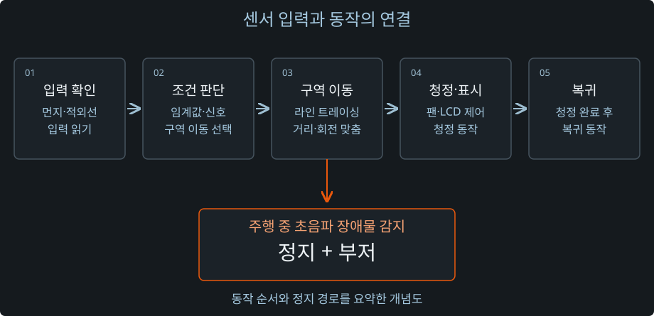

구역 이동과 복귀
센서 입력에 따라 해당 구역으로 이동하고 복귀하는 흐름 확인
02 / 스마트 이동형 공기청정기
먼지가 감지된 구역으로 이동해 청정하고 복귀하는 시제품의 소프트웨어를 담당했습니다. 센서 입력과 동작 순서를 연결하고, 실제 주행에서 거리·회전과 장애물 대응을 확인했습니다.
2023.03 ~ 2023.06 · 졸업작품
CONTROL SCENARIO
01 / Background
구역별 먼지 감지에 따라 이동 장치가 해당 구역으로 이동하고, 청정 동작을 수행한 뒤 복귀하는 시제품을 만들었습니다. 저는 C·ATmega128 기반 센서 입력 처리와 이동·팬·LCD·복귀 동작 제어를 담당했습니다.
각 부품의 동작을 전체 작업 순서로 연결하는 것이 과제였습니다. 어떤 입력에서 이동을 시작하고, 이동 중 장애물을 만나면 어떻게 대응할지까지 실제 장치의 동작으로 확인해야 했습니다.
02 / Control Flow
먼지 센서 임계값과 적외선 신호를 구역 이동 조건으로 활용했습니다. 라인 트레이싱으로 해당 구역에 이동하고, 팬 작동과 LCD 표시를 제어한 뒤 복귀하는 순서를 연결했습니다.

| 입력·장치 | 제어에서 맡은 역할 |
|---|---|
| 먼지·적외선 | 구역 이동 조건 판단 |
| 라인 트레이싱 | 해당 구역으로 이동 |
| 팬·LCD | 청정 동작과 LCD 표시 |
| 초음파·부저 | 주행 중 장애물 감지 시 정지·알림 |
03 / On-Robot Tuning
동작 순서를 코드로 연결한 뒤에는 실제 장치에서 이동 거리와 회전 동작을 맞추는 과정이 남았습니다. 실제 주행을 보며 이동 거리와 회전 동작을 조정하고, 구역 이동과 복귀 흐름을 확인했습니다.
센서 입력을 받은 뒤 이동·청정·표시·복귀로 이어지는 제어 흐름을 구성했습니다.
주행 시험에서 장치의 이동과 회전을 관찰하며 동작을 조정했습니다.
주행 중 초음파 센서로 장애물을 감지하면 이동을 멈추고 부저가 동작하는지 확인했습니다.
04 / Validation
센서 입력에 따라 해당 구역으로 이동하고 복귀하는 흐름 확인
주행과 청정 동작, LCD 표시가 작업 순서에 맞게 연결되는지 확인
실제 주행 시험으로 이동 거리와 회전 동작 조정
주행 중 장애물 감지에 따른 정지와 알림 동작 확인
시제품에서 센서 입력이 이동·청정·복귀와 장애물 대응으로 이어지는 제어 흐름을 실제 장치로 확인했습니다.
05 / Takeaway